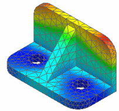
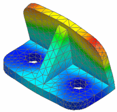
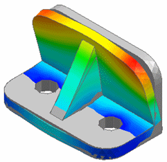
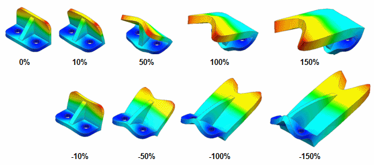
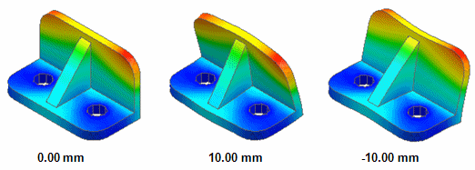
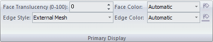
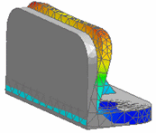
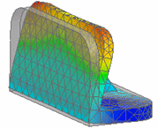
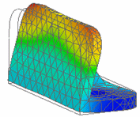

Primary, deformed, and undeformed display
Displaying model states
The primary model is the analyzed model, which is displayed by default in the Simulation Results environment.

Use the options in the Show group→Display Options  on the Home tab or the Display tab to choose what additional model states to show
in the plot:
on the Home tab or the Display tab to choose what additional model states to show
in the plot:
-
The deformed model state,


-
Or the undeformed model superimposed on the deformed model, as illustrated below.


Controlling model deformation
You can control the type and amount of model deformation using the options in the Home tab→Deformation group:

Entering a value of 0 indicates no deformation. Entering a negative value shows the deformation in the opposite direction.
-
Percentage—Displays the relative deformation of the model, where the maximum deformation is scaled to a specified percentage of the model size.

-
Normalize—Displays the relative deformation of the model, where the maximum deformation is set to the specified value and the rest is scaled appropriately.

-
Actual—Displays the deformation as the actual deformation in model units.
Adjusting the appearance of faces and edges
You can use the options on the Display tab to adjust face color, face translucency, edge style, and edge color independently on the model.
These display settings are applied only while viewing the analysis results.
-
Primary and undeformed display—The options in the Primary Display group and the Undeformed Display group provide identical, yet independent, controls for the primary and undeformed model states, respectively.

Example:When you display the undeformed model superimposed on the primary (deformed) model, you can change the translucency and color of faces and edges in the undeformed model so that it is visible but does not hide the deformed model.
Undeformed Display–Face Translucency:
Opaque (100)
Translucent (75)
Transparent (0)



The settings applied to the model above are:
Contour: ON
Contour Style: Smooth
Deformation: ON
Undeformed Model: ON
View: Shaded with Visible Edges
Primary Display—
-
Face Translucency: 0 (Opaque)
-
Face Color: Automatic
-
Edge Style: External Mesh
-
Edge Color: Automatic
Undeformed Display—
-
Face Translucency: (see above)
-
Face Color: Automatic
-
Edge Style: Model
-
Edge Color: Automatic
-